Part 2 · Signs · Chapter 2M
Recreational and Cultural Interest Area Signs
White-on-brown symbol and destination guide signs directing road users to parks, campgrounds, recreational facilities, and historical/cultural landmarks, plus California's memorial/dedication and historic-route/bridge signing programs.
2M.01Scope
- 01Recreational or cultural interest areas are attractions or traffic generators that are open to the general public for the purpose of play, amusement, or relaxation. Recreational attractions include such facilities as parks, campgrounds, game-hunting facilities, and ski areas, while examples of cultural attractions include museums, art galleries, and historical buildings or sites.
- 02The purpose of recreation and cultural interest area signs is to guide road users to a general area and then to specific facilities or activities within the area.
- 03Recreational and cultural interest area guide signs directing road users to significant traffic generators may be used on freeways and expressways where there is direct access to these areas as provided in Section 2M.09.
- 04Recreational and cultural interest area signs may be used off the road network, as appropriate.
2M.02Application of Recreational and Cultural Interest Area Signs
- 01Provisions for signing recreational or cultural interest areas are subdivided into two different types of signs: (1) symbol signs and (2) destination guide signs.
- 02Highway agencies providing recreational and cultural interest area signing should establish a policy with signing criteria for the eligibility of the various types of services, accommodations, and facilities. These signs should not be used where they might be confused with other traffic control signs.
- 03Recreational and cultural interest area guide signs may be used in recreational or cultural interest areas for signing non-vehicular events and amenities such as trails, structures, and facilities.
- 04Symbols for use only within recreational and cultural interest area facilities are noted in Table 2M-1.
- 05Section 2A.09 contains information regarding the use of recreational and cultural interest area symbols on other types of signs.
- 06The recreational and cultural interest area signs are supplemental signs and are subject to the same spacing and number of messages limitations set forth in Chapters 2A, 2D, and 2E. Under these limitations, the supplemental destination, recreational and cultural interest area signs compete for signing on the basis of traffic service.
- 07Recreational area signs to National Heritage Areas, National Parks, and State Parks should normally include the name of the area. County and City Park signs should not normally include the name.
- 08Recreational area signs may be placed for the following facilities: (A) National Parks or Monuments; (B) State Parks, when located within 5 miles of the highway; (C) County Parks, when located within 3 miles of the highway; (D) in urban areas, City Parks within 1 mile may be signed from conventional highways (normally, City Parks will not be signed to or from metropolitan freeways); (E) Campgrounds in National Forests or State Parks may be signed from conventional highways when the entrances are located on the highway — an advance sign reading "Campground ¼ mile" may be placed, and signs at the immediate entrance will be placed by the agency having jurisdiction over the campground; (F) Major rural recreational areas may be signed by name — when a recreational area is served by more than a single exit, the appropriately colored NEXT X EXITS (E9) sign may be used, normally including the name of the area and the text "RECREATIONAL AREA"; (G) in rural recreational areas, guide signs may be supplemented with white-on-brown symbol signs mounted below indicating recreational facilities available to road users; (H) National Heritage Areas, at or near the boundary or within the National Heritage Areas.
- 09On State highways, signs to major rural recreational areas that include a jurisdictional logo or are unique in shape should be placed under an encroachment permit from Caltrans.
- 10Placement of these signs to major rural recreational areas shall be by the jurisdiction or agency making the request through the normal permit process as a fee-exempt permit.
- 11These signs to major rural recreational areas should be limited to areas where they do not block or interfere with other signs necessary for safe and efficient operation of the highway. The sign panels should be clearly marked as to ownership.
- 12The use of the following symbol signs shall conform to the warrants shown here and in Chapter 2I.
General Information
- 13The Lookout Tower (RS-006) sign may be used for lookout facilities that are publicly owned, within 3 miles of the highway, and open for visitors at least 8 hours per day, 180 days per year.
- 14Follow-up signs to the RS-006 sign, where required, shall be installed by the local authority having jurisdiction in the area.
- 15The Lighthouse (RS-007) sign may be used for lighthouse facilities that are within 3 miles of the highway and open for visitors at least 8 hours per day, 180 days per year.
- 16The Deer Viewing Area (RS-011) sign may be placed to indicate an area which is determined by the Department of Fish and Wildlife to be particularly well suited for viewing deer and other wildlife. This area should have adequate parking and be within 1 mile of the highway, via a well-maintained road.
- 17The Information (D9-10) sign may be used to indicate publicly operated informational facilities that are located within 1 mile of the highway and open all year.
- 18The Pick-Up Truck (RS-140) sign indicates that trucks may use the signed facility within a recreation area.
- 19The RS-140 sign shall not be used on State highways.
- 20The Wildlife Viewing (RS-076) sign may be used to direct road users to Wildlife Viewing Areas as published in the California Watchable Wildlife Guide.
- 21Refer to cawatchablewildlife.org for more information.
- 22The WILDLIFE VIEWING (G200-81aP(CA)) plaque shall be placed below the Wildlife Viewing (RS-076) sign.
Road User Services
- 23The Camping (Tent) (D9-3) sign may be used for campsite facilities, either public or private, located within 3 miles of the highway.
- 24For use of the D9-3 sign, a minimum of 15 campsites shall be provided. Water and sanitary facilities shall be available, but not necessarily at each individual campsite.
- 25The Trailer Site (RS-040) sign may be used to indicate trailer site facilities within a public recreation area, located within 3 miles of the highway.
- 26For use of the RS-040 sign, a minimum of 15 trailer sites shall be provided. Water and sanitary facilities shall be available.
- 27The Food Service (D9-8) sign may be used to sign for food service facilities in public recreation areas which meet the criteria for Food (D9-8) signs in Chapter 2I. On State highways, only the D9-8 sign is used, where appropriate, to sign for food service facilities.
- 28The Gas (D9-7) sign may be used to indicate fuel stations in public recreation areas, which meet the criteria for Gas (D9-7) signs in Chapter 2I. On State highways, only the D9-7 sign may be used where appropriate.
- 29The Handicapped (D9-6) sign may be used in public recreation areas where paved ramps and rest room facilities accessible to, and usable by, the physically handicapped are provided. On State highways and at other State facilities, only the International Symbol of Accessibility for the Handicapped (D9-6) sign is to be used.
- 30The Lodging (D9-9) sign may be used to indicate lodging facilities in public recreation areas, which meet the criteria for Lodging (D9-9) signs in Section 2D.45. On State highways, only the D9-9 sign is used, where appropriate, to sign to lodging facilities.
- 31The Picnic Site (RS-044) sign may be used for picnic areas, either public or private, located within 1 mile of the highway.
- 32For use of the RS-044 sign, a minimum of 10 sites with tables shall be provided. Water and sanitary facilities shall be available.
- 33The Rest Room (RS-022) sign may be used to indicate free public access to a restroom within 0.25 miles of the highway where no other publicly accessible restroom is available within 10 miles.
- 34The Telephone (D9-1) sign may be used within public recreation areas where a public telephone is available 24 hours a day and it is located in a remote area where it is not expected. On State highways, only the Telephone (D9-1) sign is used, where appropriate, to indicate the availability of a telephone.
- 35The Viewing Area (RS-036) sign may be used to direct road users to public recreation area sites, located within 0.25 miles of the highway, which have significant views.
- 36For use of the RS-036 sign, the sites should have adequate parking and well-maintained access. On freeways, the VISTA POINT (D5-1) sign should be used where appropriate (see Chapter 2I).
Accommodation Services
- 37The Airport (I3-5) sign may be used in public recreation areas to direct road users to airports which meet the criteria specified for Airport (I3-5) signs. Only the I3-5 sign may be used on State highways to indicate nearby airports.
- 38The Parking (RS-034) sign may be used to indicate public parking facilities less than 0.25 miles from a highway in recreation areas.
- 39Use of RS-034 signs should be restricted to locations outside of urbanized zones, where the Parking Area (D4-1) sign is inappropriate.
Land Recreation
- 40The Playground (W15-1) sign may be used to identify playgrounds within a recreation area and not more than 1 mile from the highway.
- 41The Hiking Trail (RS-068) sign may be used for marked and maintained hiking trails.
- 42For use of the RS-068 sign, the trailhead shall be within 1 mile of the highway, with sufficient parking to accommodate normal demand.
- 43The Horse Trail (RS-064) sign may be used for identifying horse trails located within public recreation areas.
- 44For use of the RS-064 sign, the trailhead should be within 3 miles of the highway.
- 45The All-Terrain Trail (RS-095) sign may be used to identify recreation vehicle trails located within public recreation areas.
- 46The OHV TRAIL (S12(CA)) sign may be used to direct off-highway vehicle operators to the location of an OHV trail. The S12(CA) sign may be supplemented by a white-on-brown Directional Arrow Auxiliary (M6 Series) sign.
- 47For use of the RS-095 sign, the trailhead should be 3 miles or less from the highway. For this application, the term "recreation vehicle" is synonymous with "off-highway vehicle" (OHV), which includes vehicles with two or more wheels. The OHV TRAIL (S12(CA)) sign should be used at points where off-highway vehicle trails intersect highways.
- 48The Tramway (RS-071) sign may be used to identify recreational tramways or gondolas that provide year-round service and are located within 5 miles of the highway.
- 49The Golfing (RS-128) sign may be used to identify a 9-hole or more golf course within 3 miles on a conventional highway which does not have its main entrance adjacent to the highway. The RS-128 sign may be installed under permit by local agencies only.
- 50The RS-128 sign shall not be used at driving ranges or miniature golf courses.
Water Recreation
- 51The Canoeing (RS-079) sign may be used to indicate where canoeing facilities and services are available within 3 miles of the highway.
- 52The Diving (Scuba) (RS-060) sign may be used to indicate areas suitable for scuba diving within 3 miles of the highway.
- 53The Fishing Area (RS-063) sign may be used to indicate a fishing area, either public or private, within 3 miles of the highway.
- 54The Marina (RS-053) sign may be used to indicate an area where boats can be anchored and serviced within 3 miles of the highway.
- 55The Motorboating (RS-055) sign may be used to indicate areas where motorboating facilities and services are available within 3 miles of the highway.
- 56The Boat Ramp (RS-054) sign may be used to indicate boat launching facilities, either public or private, located within 3 miles of the highway.
- 57The Waterskiing (RS-058) sign may be used to indicate areas where water-skiing facilities and services are available within 3 miles of the highway.
- 58The Swimming (RS-061) sign may be used to indicate a swimming facility within a recreational area.
Winter Recreation
- 59The Cross Country Skiing (RS-046) sign may be used to indicate cross country skiing facilities within 1 mile of the highway.
- 60For use of the RS-046 sign, there should be sufficient parking to accommodate normal demand.
- 61The Sledding (RS-049) sign may be used to indicate sledding facilities within 1 mile of the highway.
- 62For use of the RS-049 sign, there should be sufficient parking to accommodate normal demand.
- 63The Snowshoeing (RS-078) sign may be used to indicate an area within 1 mile of the highway where special facilities or services are available for snowshoeing.
- 64For use of the RS-078 sign, there should be sufficient parking to accommodate normal demand.
- 65The Winter Recreation Area (RS-077) sign may be used to indicate a winter recreation area within 1 mile of the highway when other recreation symbols are not appropriate.
- 66For use of the RS-077 sign, there should be sufficient parking to accommodate normal demand.
Sno-Park Signs
- 67Only those specific parking areas designated by the Department of Parks and Recreation may be signed as Sno-Park parking areas. Parking is by permit only.
- 68The SNO-PARK X MILE (SG30(CA)) sign may be used on expressways or conventional highways to give advance notice of a snow-plowed parking area. The SNO-PARK with Arrow (SG32(CA)) sign may be used on expressways or conventional highways in advance of a turn off to a snow-plowed parking area.
- 69The SNO-PARK NEXT RIGHT (SG31(CA)) sign may be used on freeways to give advance notice of an exit to a snow-plowed parking area. The SNO-PARK (SG34(CA)) sign may be placed below an existing Advance Guide (G83(CA) Series) or Supplemental Destination (G86(CA) Series) sign on freeways to indicate an exit to a snow-plowed parking area.
- 70If the SG31(CA) or SG34(CA) sign is used, a SNO-PARK with Arrow (SG33(CA)) sign shall be placed at the ramp terminal.
- 71If used, the PERMIT REQUIRED (SG35P(CA)) plaque should be placed below the SG30(CA) or SG31(CA) sign and the PERMIT REQUIRED NOV 1 TO MAY 30 (SG35-1P(CA)) plaque should be placed below the SG32(CA) or SG33(CA) sign. Placement should be under the sign that is nearest to the Sno-Park entrance.
- 72Between November 1 and May 30, during periods when snow is not available for recreational activities, the SG35P(CA) and SG35-1(CA) plaques should be covered.
- 73At the end of the Sno-Park season, May 30, the SG35P(CA) and SG35-1(CA) signs shall be covered or removed.
2M.03Regulatory and Warning Signs
- 01All regulatory and warning signs installed on roads and streets open to public travel within recreational and cultural interest areas shall comply with the requirements elsewhere in this Manual.
2M.04General Design Requirements for Recreational and Cultural Interest Area Symbol Guide Signs
- 01When a General Information symbol contained in Chapter 2H (see Figure 2H-1) is used in conjunction with recreational and cultural interest area signing on roadways outside a recreational and cultural interest area facility, the legend and background color of the General Information symbol sign shall be as prescribed in Chapter 2H.
- 02When a General Service symbol contained in Chapter 2I (see Figure 2I-1) is used in conjunction with recreational and cultural interest area signing on roadways outside a recreational and cultural interest area facility, the legend and background color of the General Service symbol sign shall be as prescribed in Chapter 2I.
- 04Except as provided in Section 2M.09, recreational and cultural interest area symbol guide signs shall be square or rectangular in shape and shall have a white symbol or message and white border on a brown background. The symbols shall be grouped into the following usage and series categories: (A) General Applications; (B) Accommodations; (C) Services; (D) Land Recreation; (E) Water Recreation; and (F) Winter Recreation.
- 05Table 2M-1 contains a listing of the symbols within each series category.
- 06Mirror images of symbols may be used where the reverse image will better convey the message (see Section 2A.09).
2M.05Symbol Sign Sizes
- 01Recreational and cultural interest area symbol signs should be 24 x 24 inches. Where greater visibility or emphasis is needed, larger sizes should be used. Symbol sign enlargements should be in 6-inch increments.
- 02Recreational and cultural interest area symbol signs should be 30 x 30 inches when used on guide signs on freeways or expressways.
- 03A smaller size of 18 x 18 inches may be used on low-speed, low-volume roadways and on non-road applications.
2M.06Use of Educational Plaques
- 01Educational plaques should accompany all initial installations of recreational and cultural interest area symbol signs. If used, the educational plaque should be the same width as the symbol sign.
- 02Symbol signs that are readily recognizable by the public may be installed without educational plaques.
- 03Figure 2M-1 illustrates some examples of the use of educational plaques.
2M.07Use of Prohibitive Circle and Diagonal for Non-Road Applications
- 01Where it is necessary to indicate a prohibition of an activity or an item within a recreational or cultural interest area for non-road use and a standard regulatory sign for such a prohibition is not provided in Chapter 2B, the appropriate recreational and cultural interest area symbol shall be used in combination with a red prohibitive circle and diagonal. The recreational and cultural interest area symbol and the sign border shall be black and the sign background shall be white. The symbol shall be scaled proportionally to fit completely within the circle. The diagonal shall be oriented from the upper left to the lower right portions of the circle as shown in Figures 2M-1 and 2M-102(CA) and as detailed in the "Standard Highway Signs" publication.
- 02Requirements for retroreflection of the red circle and diagonal shall be the same as those requirements for backgrounds, legends, symbols, arrows, and borders.
- 03If used, Figure 2M-102(CA), Table 2M-1 (with annotations), and Table 2M-1(CA) shall identify eligible Prohibited Symbol (PS-(CA) series) signs and eligible Prohibited Recreation Educational Plaque (PREP-(CA) series) for use in California.
- 04Eligible Prohibited Recreation Educational Plaques (PREP(CA) series) are optional for use in California.
2M.08Placement of Recreational and Cultural Interest Area Symbol Signs
- 01If used, recreational and cultural interest area symbol signs shall be placed in accordance with the general requirements contained in Chapter 2A. The symbol(s) shall be placed as sign panels in the uppermost part of the sign and the directional information shall be placed below the symbol(s).
- 02If the name of the recreational or cultural interest area facility or activity is displayed on a destination guide sign (see Section 2M.09) and a symbol is used, the symbol shall be placed below the name (see Figure 2M-2).
- 03The symbols displayed with the facility or activity name may be placed below the destination guide sign as illustrated in Figure 2M-2 instead of as sign panels placed with the destination guide sign.
- 04Secondary symbols of a smaller size (18 x 18 inches) may be placed beneath the primary symbols (see Drawing A in Figure 2M-1), where needed.
- 05Recreational and cultural interest area symbols installed for non-road use shall be placed in accordance with the general sign position requirements of the authority having jurisdiction.
- 07The number of symbols used in a single sign assembly should not exceed four.
- 08The Advance Turn (M5 series) or Directional Arrow (M6 series) auxiliary signs (see Figure 2D-6) with white arrows on brown backgrounds may be used with recreational and cultural interest area symbol guide signs to create a recreational and cultural interest area directional assembly. The symbols may be used singularly, or in groups of two, three, or four on a single sign assembly (see Figures 2M-1, 2M-3, and 2M-4).
- 09The NEXT RIGHT/LEFT (G58P(CA)) plaque (see Figure 2M-1(CA)) may also be used in conjunction with the recreational and cultural interest area signs.
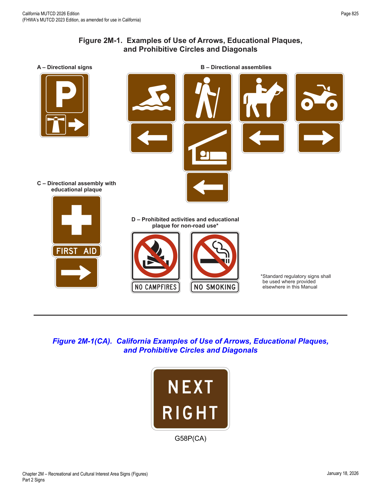
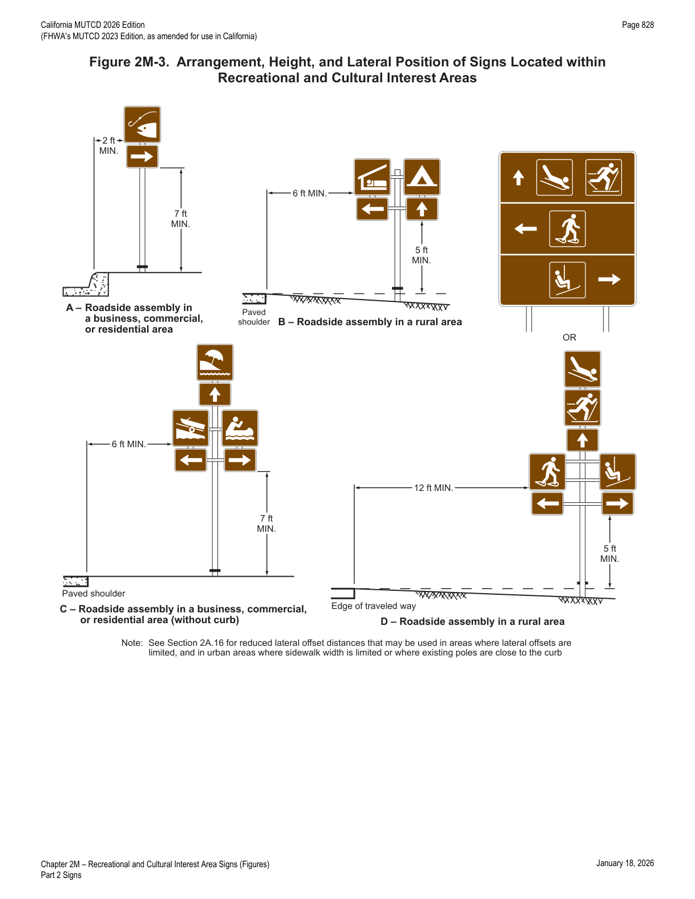
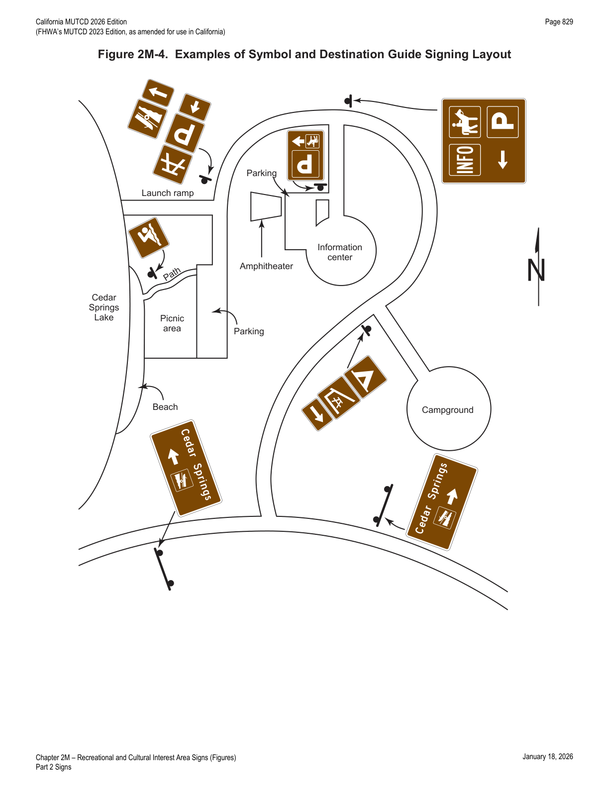
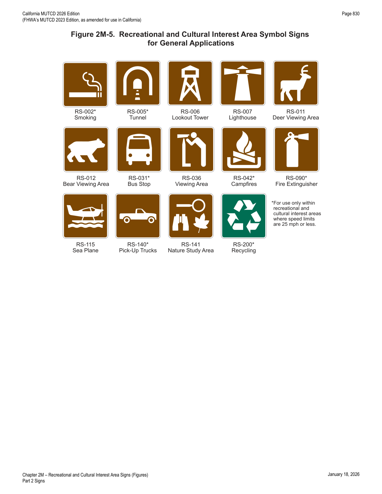
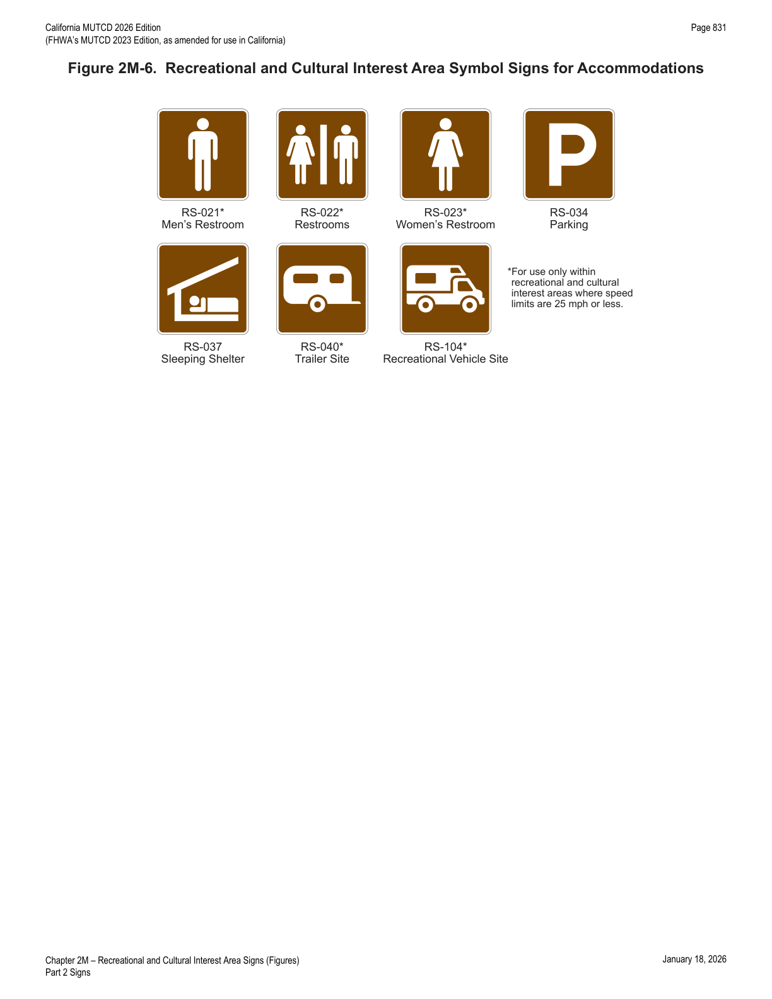
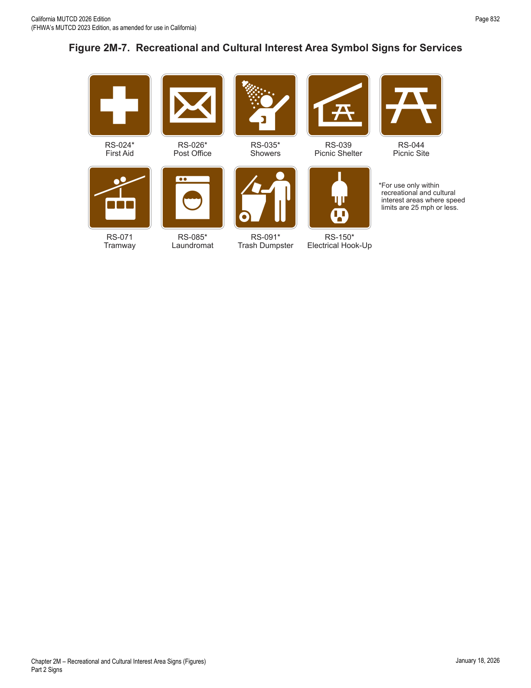
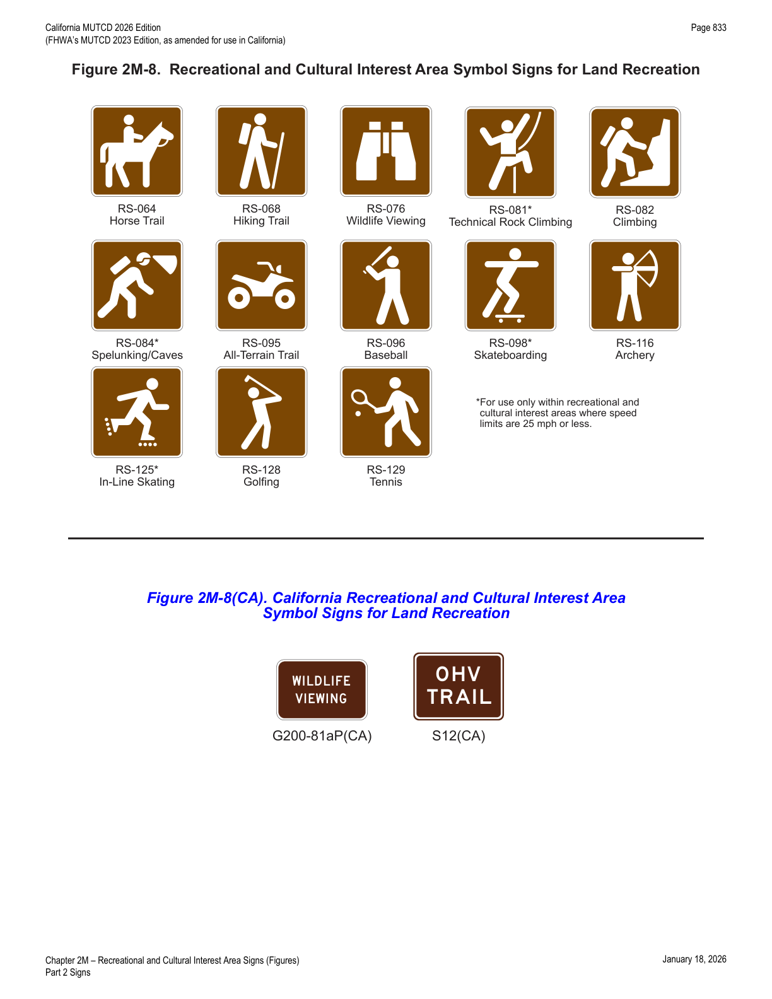
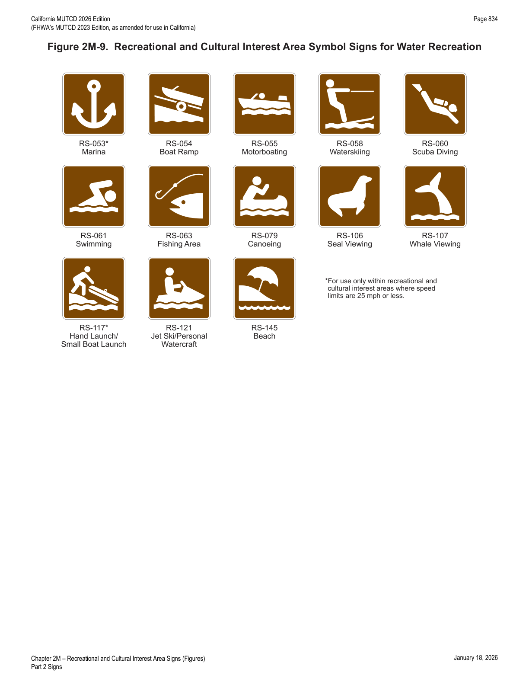
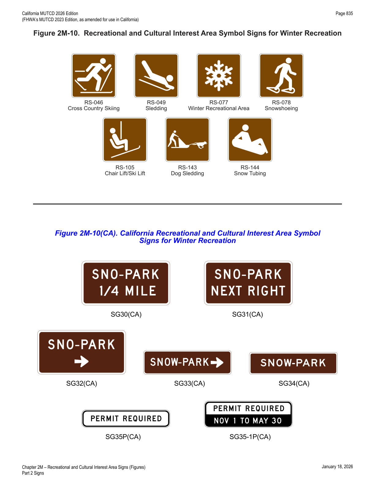
2M.09Destination Guide Signs
- 01When recreational or cultural interest area destinations are displayed on a Supplemental guide sign (see Section 2E.51), the sign shall be rectangular in shape with a white legend on a green or brown background.
- 02Trapezoidal-shaped signs (see Figure 2M-2) may be used to display recreational and cultural interest area destinations on conventional roads.
- 03Whenever the trapezoidal shape is used, the color combination shall be a white legend and border on a brown background. When the trapezoidal shape is used for a sign with a directional arrow, a right-angled trapezoid with the wider dimension of the bases (parallel sides) at the top of the sign shall be used, and the diagonal leg of the trapezoid shall be oriented in the same direction as the directional arrow. When the trapezoidal shape is used for an advance sign legend, such as with a distance or action message, an isosceles trapezoid with the wider dimension of the bases at the top of the sign shall be used.
- 04Destination guide signs with a white legend and border on a brown background may be posted at the first point where an access or crossroad intersects a highway where recreational or cultural interest areas are a significant destination along conventional roads, expressways, or freeways. Supplemental guide signs with a white legend and border on a brown background may be used along conventional roads, expressways, or freeways to direct road users to recreational or cultural interest areas. Where access or crossroads lead exclusively to the recreational or cultural interest area, the Advance guide sign (see Section 2E.23) and the Exit Direction sign (see Section 2E.25) may have a white legend and border on a brown background.
- 04aThe National/State Park (G72(CA)) sign may be installed at conventional road intersections to indicate the direction of a national or state park destination.
- 05All Exit Gore (E5-1 series) signs (see Section 2E.26) shall have a white legend and border on a green background. The background color of the interchange Exit Number (E1-5P or E1-5bP) plaque (see Section 2E.22) shall match the background color of the guide sign above which it is mounted. Design characteristics of conventional road, expressway, or freeway guide signs shall comply with Chapter 2D or 2E except as provided in this Section for color combination.
- 06The Advance guide sign and the Exit Direction sign shall retain the white-on-green color combination where the crossroad also leads to a destination other than a recreational or cultural interest area.
- 07Figures 2M-2 and 2M-2(CA) illustrate destination guide signs commonly used for identifying recreational or cultural interest areas or facilities.
- 08The name of a community that is culturally unique and historically significant can be used on supplemental guide signs in accordance with SHC § 101.12.
- 09The Historic District Supplemental Destination (G86-11(CA)) signs may be placed directing traffic to a commercial or residential area that is of historic significance to a community and is recognized as such in the National Register of Historic Places.
- 10For a Historic District to be signed from a State highway, its boundaries shall be within 3 miles of the highway. Only one sign, for each direction, shall be allowed, and it will be from the nearest State highway. The type of sign — whether a supplemental plate under an existing Supplemental Destination (G86(CA) Series) sign or a stand-alone sign — shall be determined by Caltrans. Any follow-up signs, if needed, shall be in place before the highway signs are installed.
- 11The requesting local agency shall be responsible for consulting with the Department of Parks and Recreation, Office of Historic Preservation, to verify the Historic District's official name and to ensure there are no conflicts with existing historic landmarks or points of historical interest signs which may already be in place.
- 12When the above requirements are met, the requesting agency shall adopt a resolution requesting Caltrans to place the signs. The cost of these signs and their installation shall be the responsibility of the requesting agency.
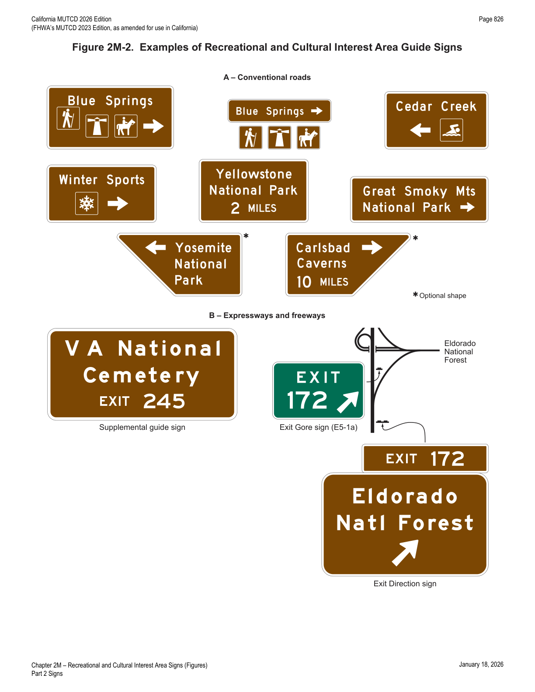
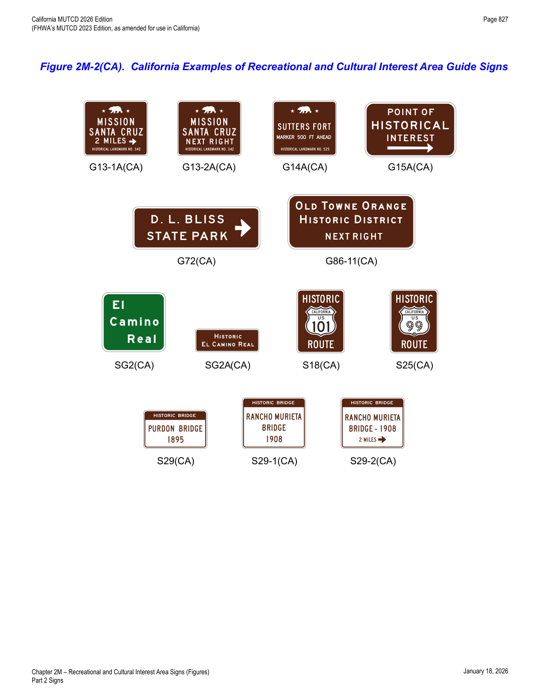
2M.10Memorial or Dedication Signing
- 01Legislative bodies will occasionally adopt an act or resolution memorializing or dedicating a highway, bridge, or other component of the highway.
- 01aThe Legislature, by legislative action, may designate names for State highways and bridges. The Legislature may request memorial named highway facilities to be designated with signs instead of a plaque and specify that the signs are to be furnished and installed "at no cost to the State."
- 02Named highways (see Section 2D.56) are officially designated and shown on official maps and serve the purpose of providing route guidance, primarily on unnumbered highways, and property addresses. A highway designated as a memorial or dedication is not considered to be a named highway for the purposes of highway signing or road user navigation and orientation.
- 03Section 2A.20 contains information regarding excessive use of signs. Because memorial or dedication names are not official highway names, memorial and dedication signing is not essential to providing navigational guidance.
- 04Such memorial or dedication names should not appear on or along a highway or be placed on bridges or other highway components. If a route, bridge, or highway component is officially designated as a memorial or dedication, and if notification of the memorial or dedication is to be made on the highway right-of-way, such notification should consist of installing a memorial or dedication marker in a rest area, scenic overlook, recreational area, or other appropriate location where parking is provided with the signing inconspicuously located relative to vehicle operations along the highway.
- 05Memorial or dedication signs should have a white legend and border on a brown background. On all such signs, the design should be simple and dignified, devoid of any appearance of advertising, and in general compliance with other signing.
- 06The lettering for the name of the person or entity being recognized should be composed of a combination of lower-case letters with initial upper-case letters.
- 07Where such memorial or dedication signs are installed on the highway mainline because the provisions of Paragraph 4 of this Section cannot be met: (1) memorial or dedication names shall not appear on directional guide signs; (2) memorial or dedication signs shall not interfere with the placement of any other traffic control devices; and (3) memorial or dedication signs shall not compromise the safety or efficiency of traffic flow. The memorial or dedication signing shall be limited to one sign at an appropriate location in each route direction except as noted in Paragraph 07a, each as an independent post-mounted sign installation.
- 07aWhen highway facilities are named by the Legislature, the following guidelines shall apply according to the type of facility: (1) Bridges — one sign (G11(CA) series) shall be placed at each approach end of the bridge, underpass, tunnel or other structure with the name of the memorialized individual; (2) Freeways and Highways — one sign (G12(CA) series) shall be placed at each terminal of the highway segment memorialized by the Legislature; (3) Rest Areas — one bronze plaque shall be installed at each legislatively named rest area, and memorial name signs shall not be installed in advance of rest areas; (4) Interchanges — one sign (G12(CA) series) shall be placed at a minimum of two approaches to the legislatively named interchange; (5) Vista Points — one bronze plaque shall be installed at each legislatively named vista point, and memorial name signs shall not be installed in advance of vista points; (6) Roundabout — one sign (G12(CA) series) shall be placed at a minimum of two approaches to the roundabout; (7) Bikeways — refer to Chapter 9D.
- 07bThe principal legend on post-mounted memorial or dedication signs shall be in letters and numerals 6 inches in height for upper-case letters and 4.5 inches in nominal loop height (see Section 2D.05).
- 07cBronze plaques normally should bear the name in 1-inch letters. However, the plaque should be no larger than 30 x 30 inches.
- 07dCaltrans is authorized to expend reasonable sums for bronze plaques.
- 08Memorial or dedication signs shall be rectangular in shape. The legend displayed on memorial or dedication signs shall be limited to the name of the person, with an optional nickname in quotation marks if stated in the concurrent resolution, or entity being recognized, and a simple message preceding the name, such as "DEDICATED TO." Additional legend, such as biographical information, shall not be displayed on memorial or dedication signs. Decorative or graphical elements, pictographs, logos, or symbols shall not be displayed on memorial or dedication signs. All letters and numerals displayed on memorial or dedication signs shall be as provided in the "Standard Highway Signs" publication. The route number or officially mapped name of the highway shall not be displayed on the memorial or dedication sign.
- 09Memorial or dedication signs shall not imply that a highway has been officially renamed.
- 10Memorial or dedication names shall not appear on supplemental signs, street name signs or on any other information sign on or along the highway or its intersecting routes.
- 10aMemorial or dedication signs shall not be installed as overhead signs.
- 11Freeways and expressways should not be signed as memorial or dedicated highways.
- 12When used, memorial or dedication signs should be located in accordance with the provisions for excessive use of signs (see Section 2A.20).
- 13Paragraph 36 of Section 2D.45 contains provisions regarding the use of memorial or dedication signing in conjunction with Street Name signs.
- 14The Memorial Bridge (G11-4A(CA) and G11-4B(CA)) signs (see Figure 2M-101(CA)) may be placed above an existing Inventory Marker (G11-1(CA), G11-2(CA), G11-4(CA) or G11-5(CA)) when an appropriate authority has requested that a highway facility be designated as a memorial facility.
- 15The Memorial Bridge and Inventory Marker (G11-8(CA) and G11-9(CA)) combination signs (see Figure 2M-101(CA)) may be placed when an appropriate authority has requested that a highway facility be designated as a memorial facility.
- 16The Inventory Markers should be placed at each end of a structure, with the bottom of the sign even with the top of the bridge rail.
- 17The official name and number of structures on State highways are determined by Caltrans' Office of Structures Design.
Victims Memorial Program Signs (S35(CA) Series)
- 18Refer to SHC § 101.10.
- 19The PLEASE DON'T DRINK AND DRIVE (S35(CA)) sign (see Figure 2M-101(CA)) may be placed on any state highway upon request from an immediate family member of a person who was killed by a driver intoxicated with drugs or alcohol, in memory of the victim.
- 20The IN MEMORY OF XXX – 1 PERSON (S35-1P(CA)), IN MEMORY OF XXX – 2 PERSONS (S35-2P(CA)) or IN MEMORY OF XXX – 3 PERSONS (S35-3P(CA)) sign (see Figure 2M-101(CA)) shall be placed below the S35(CA) sign.
- 21The following conditions shall be satisfied to qualify for a S35(CA) sign on a state highway: (1) at least one of the deceased victim's immediate family members requests a memorial sign — an immediate family member is a spouse, child, stepchild, brother, stepbrother, sister, stepsister, mother, stepmother, father or stepfather; (2) the accident occurred on or after January 1, 1991; (3) either (a) the intoxicated driver was convicted of second-degree murder, or gross vehicular manslaughter, or vehicular manslaughter, or (b) the intoxicated driver died or could not be prosecuted because of mental incompetence (note: an intoxicated driver who died does NOT qualify as a victim).
- 22The placement of the S35(CA) sign on state highways shall be per the following requirements: (1) signs will be installed in accordance with applicable Caltrans policies and standards for signs, including posts, hardware, materials, vertical, longitudinal, and lateral positioning; (2) Caltrans will NOT install or maintain a memorial sign if there is written opposition from any immediate family member; (3) only one sign will be installed in one direction of travel on the right side of the state highway in close proximity to where the accident occurred at a location where it is safe and practical to do so; (4) Caltrans will maintain the sign for 7 years or until the condition of the sign has deteriorated to a point where it is no longer serviceable, whichever occurs first; (5) only one sign will be installed per accident, though multiple victim names may appear on the sign; (6) a sign will NOT be installed in the median of any state highway.
2M.101(CA)Historical Landmark Signs (G13-1A(CA), G13-2A(CA) and G14A(CA))
- 01The Historical Landmark (G13-1A(CA) and G13-2A(CA)) signs and the Advance Historical Landmark (G14A(CA)) sign shall have a white legend and border on a brown colored background.
- 02The G13-1A(CA), G13-2A(CA) and G14A(CA) signs may be in addition to the normal complement of signs, but minimum spacing will be maintained.
- 03The G13-1A(CA), G13-2A(CA) and G14A(CA) signs may be placed directing to Historical Landmarks that are registered with the Department of Parks and Recreation.
- 04On freeways, the G13-1A(CA), G13-2A(CA) and G14A(CA) signs shall be limited to those more important and better known landmarks where some physical evidence remains, such as missions, forts, state monuments, etc., rather than mere sites of former buildings or happenings.
- 05The Office of Historic Preservation within the Department of Parks and Recreation (or the Resource Protection Division in the case of State Historic Park sites) shall be notified prior to the removal of existing G13-1A(CA), G13-2A(CA) and G14A(CA) signs.
- 06The Historical Landmark (G13-1A(CA)) sign should be used on conventional highways to guide road users by the most direct route to registered historical landmarks which are located within 5 miles of the highway. The sign should be placed not more than 150 feet in advance of the intersection on the right.
- 07The Historical Landmark (G13-2A(CA)) sign should be used on freeways to guide road users to the original 21 California Missions and other important well-known historical landmarks (refer to § 123.5 of the SHC for signing to Missions). The G13-2A(CA) sign should also be used on freeways to guide road users to historical landmarks that have a profound impact on the history of California as a whole.
- 08Supplemental Destination (G86(CA) Series) signs (white text on green background) may be used on freeways where the landmark generates considerable traffic.
- 09These G86(CA) Series signs shall be followed up by standard Historical Landmark signs on the next exit ramps.
- 10The Advance Historical Landmark (G14A(CA)) sign should be used in advance of a registered historical landmark monument or plaque within or adjacent to the right of way. The sign should be placed 500 to 1,500 feet in advance of the landmark or monument on the right, depending on the approach speed of traffic.
2M.102(CA)POINT OF HISTORICAL INTEREST Sign (G15A(CA))
- 01The POINT OF HISTORICAL INTEREST (G15A(CA)) sign shall have a white legend on a brown background.
- 02The G15A(CA) sign shall not be used on freeways.
- 03The POINT OF HISTORICAL INTEREST (G15A(CA)) sign may be used to direct the public to a historical point of interest that has been registered with the Office of Historic Preservation, Department of Parks and Recreation. The G15A(CA) sign may be used on the right on city streets or conventional rural highways.
- 04The G15A(CA) sign is placed when requested by local authorities, after markers or other identification have been placed at the location and follow-up signs, if necessary, have been installed.
2M.103(CA)Historic Route Signs (SG2(CA), SG2A(CA), S18(CA) and S25(CA))
- 01The EL CAMINO REAL (SG2(CA)) sign should be used in combination with the Mission Bell assembly, to identify the original route of El Camino Real.
- 02The HISTORIC EL CAMINO REAL (SG2A(CA)) sign should be used in combination with the Mission Bell assembly, to identify Historic El Camino Real.
- 03The Historic Route (S18(CA)) sign may be used to identify a "Historic Route." The Legislature may direct the use of this sign.
- 04Caltrans and local agencies with portions of Historic Routes under their jurisdiction, upon application by an interested local agency or private group and receiving donations from non-State sources for the cost of the sign and their installation, can place these signs as requested.
- 05The Historic Route 99 (S25(CA)) sign is used to identify "Historic Route 99."
- 06Caltrans and local agencies with portions of former U.S. Route 99 currently under their jurisdiction, upon application by an interested local agency or private group and receiving donations from non-State sources for the cost of the sign and their installation, can place these signs as requested.
- 07Suggested placement should be staggered in each direction at approximately 10-mile intervals on conventional highways and 25-mile intervals on freeways for the S18(CA) and S25(CA) signs.
2M.104(CA)Historic Bridge Signs (S29(CA), S29-1(CA) and S29-2(CA))
- 01The Historic Bridge (S29(CA) and S29-1(CA)) sign should be used to identify 280 bridges in the State that are of historical significance and appear in Caltrans' publication titled "Historical Highway Bridges of California."
- 02The Advance Historic Bridge (S29-2(CA)) sign should be used in advance of a historic bridge to direct the public to the historic bridge.
- 03The initial installation of the Historic Bridge signs was through a grant provided under the ISTEA Enhancement Program and administered by Caltrans' Environmental Program. Maintenance for the existing signs is borne by the agency responsible for the bridge.
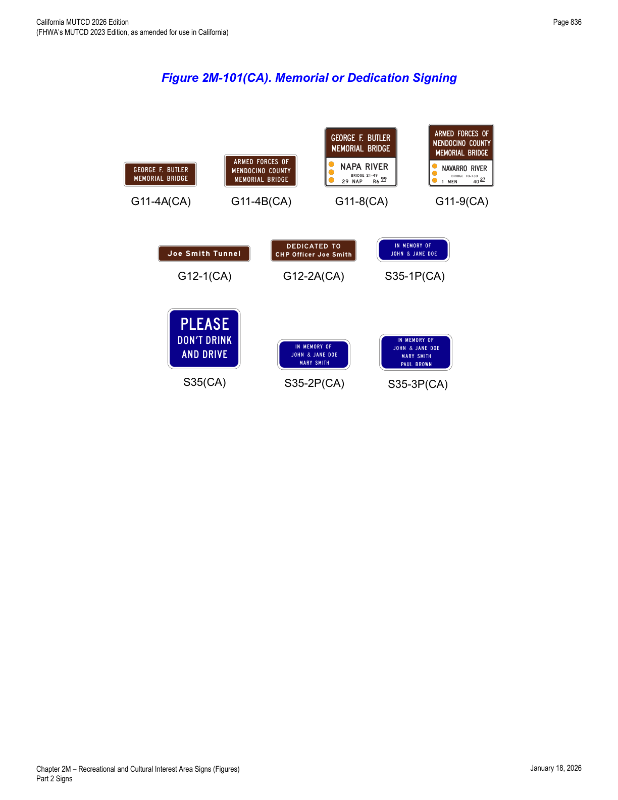
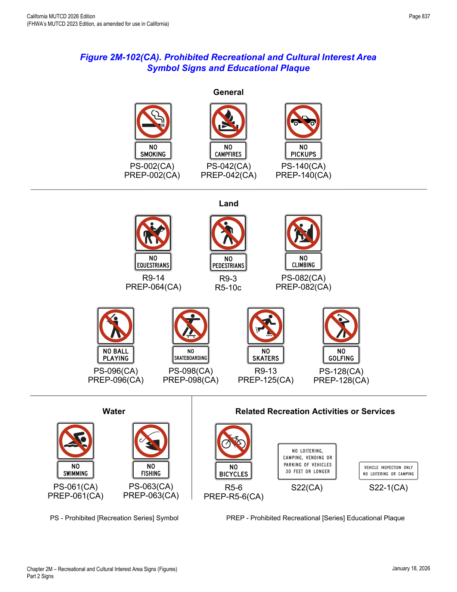
In practice: because memorial/dedication signs never appear on directional guide signs or replace the official route name, engineers reviewing a legislative highway-naming request should default to a bronze plaque at a rest area or vista point (Paragraph 7a) rather than a mainline sign whenever the siting criteria in Paragraph 4 can be met.
| Category | Symbol / Sign | Designation |
|---|---|---|
| General | Bear Viewing Area | RS-012 |
| Bus Stop* | RS-031 | |
| Campfires* | RS-042 | |
| Deer Viewing Area | RS-011 | |
| Fire Extinguisher* | RS-090 | |
| Lighthouse | RS-007 | |
| Lookout Tower | RS-006 | |
| Nature Study Area | RS-141 | |
| Pick-Up Trucks* | RS-140 | |
| Recycling* | RS-200 | |
| Sea Plane | RS-115 | |
| Tunnel* | RS-005 | |
| Viewing Area | RS-036 | |
| Services | Electrical Hook-Up* | RS-150 |
| First Aid* | RS-024 | |
| Laundromat* | RS-085 | |
| Picnic Shelter | RS-039 | |
| Picnic Site | RS-044 | |
| Post Office* | RS-026 | |
| Showers* | RS-035 | |
| Tramway | RS-071 | |
| Trash Dumpster* | RS-091 | |
| Accommodations | Men's Restroom* | RS-021 |
| Parking | RS-034 | |
| Recreational Vehicle Site* | RS-104 | |
| Restrooms* | RS-022 | |
| Sleeping Shelter | RS-037 | |
| Smoking* | RS-002 | |
| Trailer Site* | RS-040 | |
| Land Recreation | All-Terrain Trail | RS-095 |
| Archery | RS-116 | |
| Baseball | RS-096 | |
| Climbing (eligible for Prohibited Symbol sign) | RS-082 | |
| Golfing (eligible for Prohibited Symbol sign) | RS-128 | |
| Hiking Trail | RS-068 | |
| Horse Trail | RS-064 | |
| In-Line Skating* | RS-125 | |
| Skateboarding* (eligible for Prohibited Symbol sign) | RS-098 | |
| Spelunking/Caves* | RS-084 | |
| Technical Rock Climbing* | RS-081 | |
| Tennis | RS-129 | |
| Wildlife Viewing | RS-076 | |
| Water Recreation | Beach | RS-145 |
| Boat Ramp | RS-054 | |
| Canoeing | RS-079 | |
| Fishing Area (eligible for Prohibited Symbol sign) | RS-063 | |
| Hand Launch/Small Boat Launch* | RS-117 | |
| Jet Ski/Personal Watercraft | RS-121 | |
| Marina* | RS-053 | |
| Motorboating | RS-055 | |
| Scuba Diving | RS-060 | |
| Seal Viewing | RS-106 | |
| Swimming (eligible for Prohibited Symbol sign) | RS-061 | |
| Winter Recreation | Chair Lift/Ski Lift | RS-105 |
| Cross Country Skiing | RS-046 | |
| Dog Sledding | RS-143 | |
| Sledding | RS-049 | |
| Snow Tubing | RS-144 | |
| Snowshoeing | RS-078 | |
| Winter Recreational Area | RS-077 |
| Sign or Plaque | Designation | Section | Conventional Road | Freeway or Expressway |
|---|---|---|---|---|
| Memorial Bridge | G11-4A(CA) | 2M.10 | 44 x 18 | 44 x 18 |
| Memorial Bridge | G11-4B(CA) | 2M.10 | 44 x 24 | 44 x 24 |
| Memorial Bridge and Inventory Marker | G11-8(CA) | 2M.10 | 44 x 36 | 44 x 36 |
| Memorial Bridge and Inventory Marker | G11-9(CA) | 2M.10 | 44 x 42 | 44 x 42 |
| Memorial Highway | G12-1(CA) | 2M.10 | VAR x 18 | VAR x 24 |
| Memorial Highway | G12-2A(CA) | 2M.10 | VAR x 30 | VAR x 42 |
| Historical Landmark | G13-1A(CA) | 2M.101(CA) | 36 x 30 | 36 x 30 |
| Historical Landmark | G13-2A(CA) | 2M.101(CA) | 72 x 60 | 72 x 60 |
| Advance Historical Landmark | G14A(CA) | 2M.101(CA) | 36 x 30 | 36 x 30 |
| POINT OF HISTORICAL INTEREST | G15A(CA) | 2M.102(CA) | 15 x 9 | 36 x 30 |
| NEXT RIGHT/LEFT (plaque) | G58P(CA) | 2M.08 | 30 x 24 | 30 x 24 |
| National/State Park with Arrow | G72(CA) | 2M.09 | VAR x 18 | VAR x 30 |
| Historic District Supplemental Destination | G86-11(CA) | 2M.09 | VAR x 42 | VAR x 54 |
| WILDLIFE VIEWING (plaque) | G200-81aP(CA) | 2M.02 | 24 x 12 | 30 x 18 |
| EL CAMINO REAL | SG2(CA) | 2M.103(CA) | 30 x 28 | 48 x 40 |
| HISTORIC EL CAMINO REAL | SG2A(CA) | 2M.103(CA) | 42 x 15 | 42 x 15 |
| SNO-PARK X MILE | SG30(CA) | 2M.02 | 60 x 30 | 60 x 30 |
| SNO-PARK NEXT RIGHT | SG31(CA) | 2M.02 | 60 x 30 | 60 x 30 |
| SNO-PARK with Arrow | SG32(CA) | 2M.02 | 60 x 30 | 60 x 30 |
| SNO-PARK with Arrow | SG33(CA) | 2M.02 | VAR x 12 | VAR x 18 |
| SNO-PARK | SG34(CA) | 2M.02 | 96 x 24 | 120 x 30 |
| PERMIT REQUIRED (plaque) | SG35P(CA) | 2M.02 | 60 x 12 | 60 x 12 |
| PERMIT REQUIRED with Dates (plaque) | SG35-1P(CA) | 2M.02 | 60 x 18 | 60 x 18 |
| OHV TRAIL | S12(CA) | 2M.02 | 24 x 18 | 24 x 18 |
| Historic Route | S18(CA) | 2M.103(CA) | 12 x 18 | 24 x 36 |
| Historic Route 99 | S25(CA) | 2M.103(CA) | 12 x 18 | 24 x 36 |
| Historic Bridge | S29(CA) | 2M.104(CA) | VAR x 18 | VAR x 36 |
| Historic Bridge | S29-1(CA) | 2M.104(CA) | VAR x 24 | VAR x 48 |
| Advance Historic Bridge | S29-2(CA) | 2M.104(CA) | VAR x 24 | VAR x 48 |
| PLEASE DON'T DRINK AND DRIVE | S35(CA) | 2M.10 | 36 x 30 | 36 x 30 |
| IN MEMORY OF XXX – 1 PERSON (plaque) | S35-1P(CA) | 2M.10 | 36 x 12 | 36 x 12 |
| IN MEMORY OF XXX – 2 PERSONS (plaque) | S35-2P(CA) | 2M.10 | 36 x 15 | 36 x 15 |
| IN MEMORY OF XXX – 3 PERSONS (plaque) | S35-3P(CA) | 2M.10 | 36 x 18 | 36 x 18 |
★ Key Takeaways — Chapter 2M
- Recreational and cultural interest area symbol signs are white-on-brown (24 x 24 in. standard, 30 x 30 in. on freeways/expressways, 18 x 18 in. optional for low-speed/non-road use), organized into six series: General Applications, Accommodations, Services, Land Recreation, Water Recreation, and Winter Recreation.
- Nearly every symbol sign in Section 2M.02 carries its own distance-to-highway eligibility test (commonly 0.25, 1, 3, or 5 miles) and minimum facility-size threshold (e.g., 15 campsites for D9-3, 10 tabled sites for RS-044) — always check the specific paragraph rather than assuming a blanket rule.
- Destination guide signs may use a trapezoidal shape unique to this chapter on conventional roads, with the diagonal leg oriented to match the directional arrow; Exit Gore signs stay white-on-green regardless.
- Memorial/dedication signing is deliberately minimalist — name (plus optional nickname) and a simple lead-in phrase only, no biographical text, logos, or route numbers, one sign per direction, never overhead, and never implying an official highway renaming.
- California layers an extensive historic-designation toolkit onto the base chapter: Historical Landmark and Advance Historical Landmark signs, POINT OF HISTORICAL INTEREST, El Camino Real / Historic Route 99 markers, Historic Bridge signs, and the S35(CA) Victims Memorial Program with its own eligibility and installation conditions (SHC § 101.10).